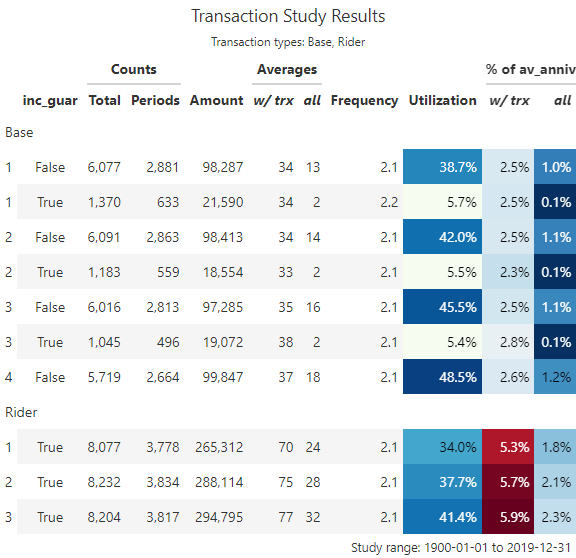

This article walks through an example of creating a transaction study using the actxps package. Unlike a termination study, transaction studies track events that can occur multiple times over the life of a policy. Often, transactions are expected to reoccur; for example, the utilization of a guaranteed income stream.
Key questions to answer in a transaction study are:
What types of transactions occurred?
What is the count, amount, and average size of observed transactions?
What percentage of policies have transactions each exposure period?
How do transactions compare to expectations?
What is the rate of transaction amounts as a percentage of another value?
The example below walks through preparing data by adding transaction information to an ExposedDF object using the add_transactions() method. Next, study results are summarized using the trx_stats() method.
Simulated transaction and account value data
In this example, we’ll be using the census_dat, withdrawals, and account_vals data sets. Each data set is based on a theoretical block of deferred annuity business with a guaranteed lifetime income benefit.
census_dat contains census-level information with one row per policy
withdrawals contains withdrawal transactions. There are 2 types of transactions in the data: “Base” (ordinary withdrawals) and “Rider” (guaranteed income payments).
account_vals contains historical account values on policy anniversaries. This data will be used to calculate withdrawal rates as a percentage of account values.
The add_transactions() method
The add_transactions() method attaches transactions to an ExposedDF object, which contains a data frame with exposure-level records. For our example, we first need to convert census_dat into exposure records using ExposedDF().1 This example will use policy year exposures.
import actxps as xpcensus_dat = xp.load_census_dat()exposed_data = xp.ExposedDF(census_dat, "2019-12-31", target_status="Surrender")exposed_data
Exposure data
Exposure type: policy_year
Target status: Surrender
Study range: 1900-01-01 to 2019-12-31
A DataFrame: 141,252 x 15
pol_num status issue_date inc_guar qual age product gender wd_age \
0 1 Active 2014-12-17 True False 56 b F 77
1 1 Active 2014-12-17 True False 56 b F 77
2 1 Active 2014-12-17 True False 56 b F 77
3 1 Active 2014-12-17 True False 56 b F 77
4 1 Active 2014-12-17 True False 56 b F 77
5 1 Active 2014-12-17 True False 56 b F 77
6 2 Active 2007-09-24 False False 71 a F 71
7 2 Active 2007-09-24 False False 71 a F 71
8 2 Active 2007-09-24 False False 71 a F 71
9 2 Active 2007-09-24 False False 71 a F 71
premium term_date pol_yr pol_date_yr pol_date_yr_end exposure
0 370.0 NaT 1 2014-12-17 2015-12-16 1.000000
1 370.0 NaT 2 2015-12-17 2016-12-16 1.000000
2 370.0 NaT 3 2016-12-17 2017-12-16 1.000000
3 370.0 NaT 4 2017-12-17 2018-12-16 1.000000
4 370.0 NaT 5 2018-12-17 2019-12-16 1.000000
5 370.0 NaT 6 2019-12-17 2020-12-16 0.040984
6 708.0 NaT 1 2007-09-24 2008-09-23 1.000000
7 708.0 NaT 2 2008-09-24 2009-09-23 1.000000
8 708.0 NaT 3 2009-09-24 2010-09-23 1.000000
9 708.0 NaT 4 2010-09-24 2011-09-23 1.000000
The withdrawals data has 4 columns that are required for attaching transactions:
pol_num: policy number
trx_date: transaction date
trx_type: transaction type
trx_amt: transaction amount
withdrawals = xp.load_withdrawals()withdrawals
pol_num
trx_date
trx_type
trx_amt
0
2
2007-10-05
Base
25.0
1
2
2009-07-30
Base
12.0
2
2
2010-02-22
Base
7.0
3
2
2010-12-30
Base
52.0
4
2
2012-05-07
Base
41.0
...
...
...
...
...
160125
20000
2015-08-08
Rider
547.0
160126
20000
2016-07-26
Rider
106.0
160127
20000
2017-12-29
Rider
31.0
160128
20000
2018-06-14
Rider
75.0
160129
20000
2019-12-09
Rider
466.0
160130 rows × 4 columns
The grain of this data is one row per policy per transaction. The expectation is that the number of records in the transaction data will not match the number of rows in the exposure data. That is because policies could have zero or several transactions in a given exposure period.
The add_transactions() method uses a non-equivalent join to associate each transaction with a policy number and a date interval found in the exposure data. Then, transaction counts and amounts are summarized such that there is one row per exposure period. In the event there are multiple transaction types found in the data, separate columns are created for each transaction type.
Using our example, we pass both the exposure and withdrawals data to add_transactions(). The resulting data has the same number of rows as original exposure data and 4 new columns:
trx_amt_Base: the sum of “Base” withdrawal transactions
trx_amt_Rider: the sum of “Rider” withdrawal transactions
trx_n_Base: the number of “Base” withdrawal transactions
trx_n_Rider: the number of “Rider” withdrawal transactions
If we print exposed_data, we can see that it has an additional attribute for transaction types that have been attached.
exposed_data
Exposure data
Exposure type: policy_year
Target status: Surrender
Study range: 1900-01-01 to 2019-12-31
Transaction types: Base, Rider
A DataFrame: 141,252 x 19
pol_num status issue_date inc_guar qual age product gender wd_age \
0 1 Active 2014-12-17 True False 56 b F 77
1 1 Active 2014-12-17 True False 56 b F 77
2 1 Active 2014-12-17 True False 56 b F 77
3 1 Active 2014-12-17 True False 56 b F 77
4 1 Active 2014-12-17 True False 56 b F 77
5 1 Active 2014-12-17 True False 56 b F 77
6 2 Active 2007-09-24 False False 71 a F 71
7 2 Active 2007-09-24 False False 71 a F 71
8 2 Active 2007-09-24 False False 71 a F 71
9 2 Active 2007-09-24 False False 71 a F 71
premium term_date pol_yr pol_date_yr pol_date_yr_end exposure \
0 370.0 NaT 1 2014-12-17 2015-12-16 1.000000
1 370.0 NaT 2 2015-12-17 2016-12-16 1.000000
2 370.0 NaT 3 2016-12-17 2017-12-16 1.000000
3 370.0 NaT 4 2017-12-17 2018-12-16 1.000000
4 370.0 NaT 5 2018-12-17 2019-12-16 1.000000
5 370.0 NaT 6 2019-12-17 2020-12-16 0.040984
6 708.0 NaT 1 2007-09-24 2008-09-23 1.000000
7 708.0 NaT 2 2008-09-24 2009-09-23 1.000000
8 708.0 NaT 3 2009-09-24 2010-09-23 1.000000
9 708.0 NaT 4 2010-09-24 2011-09-23 1.000000
trx_amt_Base trx_amt_Rider trx_n_Base trx_n_Rider
0 0.0 0.0 0.0 0.0
1 0.0 0.0 0.0 0.0
2 0.0 0.0 0.0 0.0
3 0.0 0.0 0.0 0.0
4 0.0 0.0 0.0 0.0
5 0.0 0.0 0.0 0.0
6 25.0 0.0 1.0 0.0
7 12.0 0.0 1.0 0.0
8 7.0 0.0 1.0 0.0
9 52.0 0.0 1.0 0.0
The trx_stats() method
The actxps package’s workhorse function for summarizing transaction experience is the trx_stats() method of the ExposedDF class. This function returns a TrxStats object, which is a type of data frame containing additional attributes about the transaction study.
At a minimum, a TrxStats includes the following for each transaction type (trx_type):
The number of transactions (trx_n)
The number of exposure periods with a transaction (trx_flag)
The sum of transactions (trx_amt)
The total exposure (exposure)
The average transaction amount when a transaction occurs (avg_trx)
The average transaction amount across all records (avg_all)
The transaction frequency when a transaction occurs (trx_freq = trx_n / trx_flag)
The transaction utilization (trx_util = trx_flag / exposure)
Optionally, a TrxStats can also include:
Any grouping variables attached to the input data
Transaction amounts as a percentage of another value when a transaction occurs (pct_of_*_w_trx)
Transaction amounts as a percentage of another value across all records (pct_of_*_all)
To use trx_stats(), we simply need to call the method from an ExposedDF object with transactions attached.
exposed_data.trx_stats()
Transaction study results
Study range: 1900-01-01 to 2019-12-31
Transaction types: Base, Rider
A DataFrame: 2 x 9
trx_type trx_n trx_flag trx_amt exposure avg_trx avg_all \
0 Base 60500.0 28224 1093899.0 124173.0 38.757759 8.809475
1 Rider 77321.0 35941 2842729.0 124173.0 79.094321 22.893294
trx_freq trx_util
0 2.143566 0.227296
1 2.151331 0.289443
The results show us that we specified no groups, which is why the output data contains a single row for each transaction type.
Grouped data
If the data is grouped using the groupby() method, future calls to exp_stats() will contain one record for each unique group.
If the data is grouped using the groupby() method, future calls to trx_stats() will contain one record for each unique group.
In the following, exposed_data is grouped by the presence of an income guarantee (inc_guar) before being passed to trx_stats(). This results in four rows because we have two types of transactions and two distinct values of inc_guar.
(exposed_data. groupby('inc_guar'). trx_stats())
Transaction study results
Groups: inc_guar
Study range: 1900-01-01 to 2019-12-31
Transaction types: Base, Rider
A DataFrame: 4 x 10
inc_guar trx_type trx_n trx_flag trx_amt exposure avg_trx \
0 False Base 52939.0 24703 952629.0 48938.0 38.563292
1 False Rider 0.0 0 0.0 48938.0 NaN
2 True Base 7561.0 3521 141270.0 75235.0 40.122124
3 True Rider 77321.0 35941 2842729.0 75235.0 79.094321
avg_all trx_freq trx_util
0 19.466039 2.143019 0.504782
1 0.000000 NaN 0.000000
2 1.877716 2.147401 0.046800
3 37.784661 2.151331 0.477716
Multiple grouping variables are allowed. Below, policy year (pol_yr) is added as a second grouping variable.
Transaction study results
Groups: inc_guar, pol_yr
Study range: 1900-01-01 to 2019-12-31
Transaction types: Base, Rider
A DataFrame: 60 x 11
inc_guar pol_yr trx_type trx_n trx_flag trx_amt exposure avg_trx \
0 False 1 Base 6077.0 2881 98287.0 7435.0 34.115585
1 False 1 Rider 0.0 0 0.0 7435.0 NaN
2 False 2 Base 6091.0 2863 98413.0 6813.0 34.374083
3 False 2 Rider 0.0 0 0.0 6813.0 NaN
4 False 3 Base 6016.0 2813 97285.0 6176.0 34.584074
5 False 3 Rider 0.0 0 0.0 6176.0 NaN
6 False 4 Base 5719.0 2664 99847.0 5490.0 37.480105
7 False 4 Rider 0.0 0 0.0 5490.0 NaN
8 False 5 Base 5354.0 2492 95070.0 4852.0 38.150080
9 False 5 Rider 0.0 0 0.0 4852.0 NaN
avg_all trx_freq trx_util
0 13.219502 2.109337 0.387492
1 0.000000 NaN 0.000000
2 14.444885 2.127489 0.420226
3 0.000000 NaN 0.000000
4 15.752105 2.138642 0.455473
5 0.000000 NaN 0.000000
6 18.187067 2.146772 0.485246
7 0.000000 NaN 0.000000
8 19.593982 2.148475 0.513603
9 0.000000 NaN 0.000000
Expressing transactions as a percentage of another value
In a transaction study, we often want to express transaction amounts as a percentage of another value. For example, in a withdrawal study, withdrawal amounts divided by account values provides a withdrawal rate. In a study of benefit utilization, transactions can be divided by a maximum benefit amount to derive a benefit utilization rate. In addition, actual-to-expected rates can be calculated by dividing transactions by expected values.
If column names are passed to the percent_of argument of trx_stats(), the output will contain 4 additional columns for each “percent of” variable:
The sum of each “percent of” variable
The sum of each “percent of” variable when a transaction occurs. These columns include the suffix _w_trx.
Transaction amounts divided by each “percent of” variable (pct_of_{*}_all)
Transaction amounts divided by each “percent of” variable when a transaction occurs (pct_of_{*}_w_trx)
For our example, let’s assume we’re interested in examining withdrawal transactions as a percentage of account values, which are available in the account_vals data frame in the column av_anniv.
If conf_int is set to True, trx_stats() will produce lower and upper confidence interval limits for the observed utilization rate. Confidence intervals are constructed assuming a binomial distribution.
The default confidence level is 95%. This can be changed using the conf_level argument. Below, tighter confidence intervals are constructed by decreasing the confidence level to 90%.
If any column names are passed to percent_of, trx_stats() will produce additional confidence intervals:
Intervals for transactions as a percentage of another column when transactions occur (pct_of_{*}_w_trx) are constructed using a normal distribution.
Intervals for transactions as a percentage of another column regardless of transaction utilization (pct_of_{*}_all) are calculated assuming that the aggregate distribution is normal with a mean equal to observed transactions and a variance equal to:
\[
Var(S) = E(N) \times Var(X) + E(X)^2 \times Var(N),
\] Where S is the aggregate transactions random variable, X is an individual transaction amount assumed to follow a normal distribution, and N is a binomial random variable for transaction utilization.
The plot() and table() methods create visualizations and summary tables from TrxStats objects. See See Visualizations for full details on these functions.
trx_res.plot(y='pct_of_av_anniv_w_trx')
<Figure Size: (640 x 480)>
# first 10 rows showed for brevitytrx_res.table()

Miscellaneous
Selecting and combining transaction types
The trx_types argument of trx_stats() selects a subset of transaction types that will appear in the output.
exposed_data.trx_stats(trx_types="Base")
Transaction study results
Groups: pol_yr
Study range: 1900-01-01 to 2019-12-31
Transaction types: Base
A DataFrame: 15 x 10
pol_yr trx_type trx_n trx_flag trx_amt exposure avg_trx \
0 1 Base 7447.0 3514 119877.0 18541.0 34.114115
1 2 Base 7274.0 3422 116967.0 16971.0 34.180888
2 3 Base 7061.0 3309 116357.0 15397.0 35.163796
3 4 Base 6596.0 3080 114987.0 13790.0 37.333442
4 5 Base 6093.0 2847 109918.0 12234.0 38.608360
5 6 Base 5543.0 2572 97455.0 10697.0 37.890747
6 7 Base 4921.0 2297 92797.0 9294.0 40.399216
7 8 Base 4200.0 1964 85740.0 7783.0 43.655804
8 9 Base 3579.0 1655 70715.0 6372.0 42.728097
9 10 Base 3004.0 1376 57935.0 5052.0 42.103924
avg_all trx_freq trx_util
0 6.465509 2.119237 0.189526
1 6.892169 2.125658 0.201638
2 7.557122 2.133877 0.214912
3 8.338434 2.141558 0.223350
4 8.984633 2.140148 0.232712
5 9.110498 2.155132 0.240441
6 9.984614 2.142360 0.247149
7 11.016318 2.138493 0.252345
8 11.097772 2.162538 0.259730
9 11.467736 2.183140 0.272367
If the combine_trx argument is set to True, all transaction types will be combined in a group called “All” in the output.
exposed_data.trx_stats(combine_trx=True)
Transaction study results
Groups: pol_yr
Study range: 1900-01-01 to 2019-12-31
Transaction types: Base, Rider
A DataFrame: 15 x 10
pol_yr trx_type trx_n trx_flag trx_amt exposure avg_trx \
0 1 All 15524.0 7292 385189.0 18541.0 52.823505
1 2 All 15506.0 7256 405081.0 16971.0 55.827040
2 3 All 15265.0 7126 411152.0 15397.0 57.697446
3 4 All 14556.0 6795 398750.0 13790.0 58.682855
4 5 All 13629.0 6368 374857.0 12234.0 58.865735
5 6 All 12661.0 5914 361971.0 10697.0 61.205783
6 7 All 11552.0 5394 344299.0 9294.0 63.829996
7 8 All 10152.0 4737 312510.0 7783.0 65.972134
8 9 All 8752.0 4061 274715.0 6372.0 67.647131
9 10 All 7335.0 3374 232392.0 5052.0 68.877297
avg_all trx_freq trx_util
0 20.774985 2.128908 0.393291
1 23.869012 2.136990 0.427553
2 26.703384 2.142155 0.462817
3 28.915881 2.142163 0.492748
4 30.640592 2.140232 0.520517
5 33.838553 2.140852 0.552865
6 37.045298 2.141639 0.580374
7 40.152897 2.143129 0.608634
8 43.112837 2.155134 0.637320
9 46.000000 2.173977 0.667854
Partial exposures are removed as a default
As a default, trx_stats() removes partial exposures before summarizing results. This is done to avoid complexity associated with a lopsided skew in the timing of transactions. For example, if transactions can occur on a monthly basis or annually at the beginning of each policy year, partial exposures may not be appropriate. If a policy had an exposure of 0.5 years and was taking withdrawals annually at the beginning of the year, an argument could be made that the exposure should instead be 1 complete year. If the same policy was expected to take withdrawals 9 months into the year, it’s not clear if the exposure should be 0.5 years or 0.5 / 0.75 years. To override this treatment, set the full_exposures_only argument to False.
As noted above, the result of trx_stats() is a TrxStats object. If the summary() function is applied to a TrxStats object, the data will be summarized again and return a higher level TrxStats object.
If no additional arguments are passed, summary() returns a single row of aggregate results for each transaction type.
trx_res.summary()
Transaction study results
Study range: 1900-01-01 to 2019-12-31
Transaction types: Base, Rider
Transactions as % of: av_anniv
A DataFrame: 2 x 13
trx_type trx_n trx_flag trx_amt exposure avg_trx avg_all \
0 Base 60500.0 28224 1093899.0 124173.0 38.757759 8.809475
1 Rider 77321.0 35941 2842729.0 124173.0 79.094321 22.893294
trx_freq trx_util av_anniv av_anniv_w_trx pct_of_av_anniv_all \
0 2.143566 0.227296 184065396.0 43514812.0 0.005943
1 2.151331 0.289443 184065396.0 47684258.0 0.015444
pct_of_av_anniv_w_trx
0 0.025139
1 0.059616
If additional variable names are passed to the summary() function, then the output will group the data by those variables. In our example, if pol_yr is passed to summary(), the output will contain one row per policy year for each transaction type.